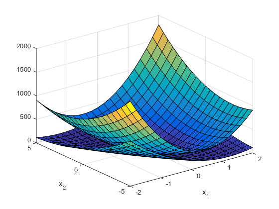
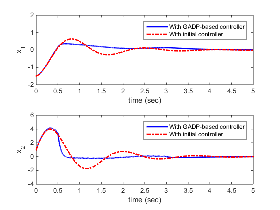

Contents
- Global Adaptive Dynamic Programming for an inverted pendulum
- LocalOnlinePolicyIteration: Implement online SOS policy iteration
- invertedPendulumSys: Inverted Pendulum System Dynamics
- LocalInvertedPendulumSysWrapper:
- LocalSigma: Basic function for the plant
- LocalExplNoise: Generate exploration noise
- LocalPostProcessData - Plot results after all simulation is finished
function SimResults = Ch4Ex4_main()
Global Adaptive Dynamic Programming for an inverted pendulum
System requirements:
- MATLAB (Manually Tested in MATLAB R2014b)
- MATLAB Symbolic Toolbox
- CVX (free to download at http://cvxr.com/cvx/)
You can download CVX along with the examples, unzip tools.zip to the root level folder of the examples. Then, run the following
>> run('.\tools\cvx-w64\cvx\cvx_setup.m') >> run('.\tools\cvx-w64\cvx\cvx_startup.m')Copyright 2015 Yu Jiang
Contact: yu.jiang@nyu.edu (Yu Jiang)
SimResults = []; k = 1; m = 1; % Mass of the pendulum l = 1; % Length of the pendulum g = 9.8; % Gravity accelaration rate Params.F = [0 1 0 ; 0 -k*l/m g ]; Params.G = [0; 1/m]; Params.Q = diag([10 10 0]); % Weighting matrix Params.R = 1; % Weighting matrix Params.Noise = 1; x = [-1.5 1]; % Initial Contidition; Params.x0 = x; K = [-10 -1 -15]; % Initial Feedback gains Psave = []; Ksave = K; xsave = []; tsave = []; T = 0.01; % Length of time interval for data collection P_old = 1000*eye(2); % Initializing the previous Value function P = 0.9*P_old; % Initialize the current Value function c = [1 0 1]; % Coefficient for SOS policy iteration NumDataIntv = 50; Iter = 0; Tol = 0.1; while norm(P_old - P)> Tol P_old = P; % Online Simulation for Data collection Theta = []; Xi = []; Phi = []; % Data matrices for IterIntv = 0:NumDataIntv - 1 [t,x] = ode45(@(t,x) LocalInvertedPendulumSysWrapper(t,x,K,Params), ... ([IterIntv, IterIntv + 1] + NumDataIntv * Iter) * T,... [x(end,1:2) zeros(1,10)]); Theta = [Theta; x(end,1)^2-x(1,1)^2 x(end,1)*x(end,2)-x(1,1)*x(1,2) x(end,2)^2-x(1,2)^2]; Phi = [Phi; x(end,3:8) -2*x(end,9:11)]; Xi = [Xi; x(end,12)]; xsave = [xsave; x(:,1:2)]; tsave = [tsave;t]; end % Online SOSp based policy iteration [P,K] = LocalOnlinePolicyIteration(Theta,Xi,Phi,P_old,c); % Save results Psave = [Psave; P(:)']; Ksave = [Ksave; K(:)']; Iter = Iter + 1; end Params.Noise = 0; % Post learning simulation [t,x] = ode45(@(t,x) LocalInvertedPendulumSysWrapper(t,x,K,Params), ... [tsave(end) 5],[x(end,1:2) zeros(1,10)]'); xsave = [xsave; x(:,1:2)]; tsave = [tsave;t]; % Create Simulation output data SimResults.xsave = xsave; SimResults.tsave = tsave; SimResults.Psave = Psave; SimResults.Ksave = Ksave; SimResults.P = P; SimResults.Iter = Iter; % Plot results LocalPostProcessData(Params,SimResults);
end
LocalOnlinePolicyIteration: Implement online SOS policy iteration
function [P,K] = LocalOnlinePolicyIteration(Theta,Xi,Phi,P_old,c) cvx_begin sdp variables p(3,1) variables bt r1 r2 r3 r4 r5 r6 % Objective of the SDP minimize(c*p) % 1) Equality constraint to calculate L and K LandK = pinv(Phi)*(Xi + Theta*p); % 2) Inequality constraint L = LandK(1:6); dFGQR = [L(1) L(2)/2 L(4)/2; L(2)/2 L(3) L(5)/2; L(4)/2 L(5)/2 L(6)]; O = [0 0 bt; 0 0 0; bt 0 0]; bt>=0; gamma1 = [r1 0 r2/2; 0 0 0; r2/2 0 0]; gamma2 = [r3 0 0; 0 0 0; 0 0 r4]; gamma3 = [0 0 r5/2; 0 0 0; r5/2 0 r6]; r1 >= 0; r3 >= 0; r5 >= 0; r1+r2 >= 0; r3+r4 >= 0; r5+r6 >= 0; dFGQR + O + gamma1 + gamma2 + gamma3 <= 0; % 3) Inequality constraint P = [p(1) p(2)/2; p(2)/2 p(3)]; P_old - P >= 0; cvx_end; K = LandK(7:9)'; end
Calling SDPT3 4.0: 13 variables, 6 equality constraints ------------------------------------------------------------ num. of constraints = 6 dim. of sdp var = 3, num. of sdp blk = 1 dim. of socp var = 3, num. of socp blk = 1 dim. of linear var = 4 ******************************************************************* SDPT3: Infeasible path-following algorithms ******************************************************************* version predcorr gam expon scale_data HKM 1 0.000 1 0 it pstep dstep pinfeas dinfeas gap prim-obj dual-obj cputime ------------------------------------------------------------------- 0|0.000|0.000|5.3e+00|1.2e+01|1.1e+06|-1.934842e+03 0.000000e+00| 0:0:00| chol 1 1 1|0.660|0.861|1.8e+00|2.0e+00|3.5e+05|-4.788470e+03 -3.777967e+04| 0:0:00| chol 1 1 2|0.730|1.000|4.8e-01|2.4e-01|1.1e+05|-1.263813e+03 -2.453294e+04| 0:0:00| chol 1 1 3|0.823|0.913|8.5e-02|1.3e-01|3.2e+04|-1.092330e+03 -1.477962e+04| 0:0:00| chol 1 1 4|1.000|1.000|7.5e-08|5.9e-02|4.0e+03|-9.603037e+02 -4.496749e+03| 0:0:00| chol 1 1 5|1.000|0.820|6.1e-09|2.5e-02|8.6e+02|-1.022247e+03 -1.711268e+03| 0:0:00| chol 1 1 6|0.630|1.000|1.8e-09|5.3e-03|5.3e+02|-1.435422e+03 -1.951015e+03| 0:0:00| chol 1 1 7|0.805|0.977|4.8e-09|1.7e-03|5.4e+01|-1.517859e+03 -1.567041e+03| 0:0:00| chol 1 1 8|1.000|1.000|5.9e-10|4.8e-04|1.9e+01|-1.533286e+03 -1.550957e+03| 0:0:00| chol 1 1 9|0.943|0.924|1.6e-10|1.7e-04|1.7e+00|-1.542635e+03 -1.543888e+03| 0:0:00| chol 1 1 10|0.982|0.986|1.2e-11|4.5e-05|5.1e-02|-1.543721e+03 -1.543649e+03| 0:0:00| chol 1 1 11|0.978|0.986|8.3e-13|6.3e-07|1.0e-03|-1.543754e+03 -1.543753e+03| 0:0:00| chol 2 2 12|0.960|0.984|4.5e-12|1.0e-08|3.8e-05|-1.543754e+03 -1.543754e+03| 0:0:00| stop: max(relative gap, infeasibilities) < 1.49e-08 ------------------------------------------------------------------- number of iterations = 12 primal objective value = -1.54375449e+03 dual objective value = -1.54375450e+03 gap := trace(XZ) = 3.79e-05 relative gap = 1.23e-08 actual relative gap = 3.10e-09 rel. primal infeas = 4.54e-12 rel. dual infeas = 1.03e-08 norm(X), norm(y), norm(Z) = 1.5e+03, 5.6e+00, 5.4e+00 norm(A), norm(b), norm(C) = 2.8e+01, 1.0e+04, 3.0e+00 Total CPU time (secs) = 0.17 CPU time per iteration = 0.01 termination code = 0 DIMACS: 5.6e-12 0.0e+00 1.0e-08 0.0e+00 3.1e-09 1.2e-08 ------------------------------------------------------------------- ------------------------------------------------------------ Status: Solved Optimal value (cvx_optval): +256.246 Calling SDPT3 4.0: 13 variables, 6 equality constraints ------------------------------------------------------------ num. of constraints = 6 dim. of sdp var = 3, num. of sdp blk = 1 dim. of socp var = 3, num. of socp blk = 1 dim. of linear var = 4 ******************************************************************* SDPT3: Infeasible path-following algorithms ******************************************************************* version predcorr gam expon scale_data HKM 1 0.000 1 0 it pstep dstep pinfeas dinfeas gap prim-obj dual-obj cputime ------------------------------------------------------------------- 0|0.000|0.000|3.6e+00|1.9e+01|4.2e+04|-7.058690e+01 0.000000e+00| 0:0:00| chol 1 1 1|0.871|0.933|4.6e-01|1.5e+00|5.9e+03|-2.838920e+01 -1.542884e+03| 0:0:00| chol 1 1 2|1.000|1.000|2.1e-07|8.5e-02|8.4e+02|-2.132351e+01 -7.149798e+02| 0:0:00| chol 1 1 3|1.000|0.860|3.5e-07|3.4e-02|2.3e+02|-3.216814e+01 -2.078349e+02| 0:0:00| chol 1 1 4|0.509|0.977|1.3e-07|8.2e-03|2.2e+02|-1.277567e+02 -3.354254e+02| 0:0:00| chol 1 1 5|0.992|0.946|2.3e-08|2.6e-03|1.4e+01|-1.402910e+02 -1.519205e+02| 0:0:00| chol 1 1 6|0.945|1.000|4.2e-09|6.9e-04|4.0e+00|-1.442573e+02 -1.475041e+02| 0:0:00| chol 1 1 7|0.942|0.871|4.3e-09|2.7e-04|5.3e-01|-1.456498e+02 -1.458866e+02| 0:0:00| chol 1 1 8|1.000|1.000|1.5e-09|6.2e-05|2.2e-01|-1.458625e+02 -1.460077e+02| 0:0:00| chol 1 1 9|0.983|0.985|4.9e-10|1.9e-05|3.5e-03|-1.459747e+02 -1.459560e+02| 0:0:00| chol 1 1 10|0.988|0.988|6.0e-12|2.2e-07|4.1e-05|-1.459767e+02 -1.459765e+02| 0:0:00| chol 1 1 11|0.988|0.989|2.4e-13|2.5e-09|4.9e-07|-1.459767e+02 -1.459767e+02| 0:0:00| stop: max(relative gap, infeasibilities) < 1.49e-08 ------------------------------------------------------------------- number of iterations = 11 primal objective value = -1.45976693e+02 dual objective value = -1.45976690e+02 gap := trace(XZ) = 4.88e-07 relative gap = 1.66e-09 actual relative gap = -8.17e-09 rel. primal infeas = 2.44e-13 rel. dual infeas = 2.50e-09 norm(X), norm(y), norm(Z) = 7.9e+02, 2.2e+00, 1.9e+00 norm(A), norm(b), norm(C) = 7.7e+01, 6.2e+02, 3.0e+00 Total CPU time (secs) = 0.15 CPU time per iteration = 0.01 termination code = 0 DIMACS: 3.1e-13 0.0e+00 2.5e-09 0.0e+00 -8.2e-09 1.7e-09 ------------------------------------------------------------------- ------------------------------------------------------------ Status: Solved Optimal value (cvx_optval): +110.269 Calling SDPT3 4.0: 13 variables, 6 equality constraints ------------------------------------------------------------ num. of constraints = 6 dim. of sdp var = 3, num. of sdp blk = 1 dim. of socp var = 3, num. of socp blk = 1 dim. of linear var = 4 ******************************************************************* SDPT3: Infeasible path-following algorithms ******************************************************************* version predcorr gam expon scale_data HKM 1 0.000 1 0 it pstep dstep pinfeas dinfeas gap prim-obj dual-obj cputime ------------------------------------------------------------------- 0|0.000|0.000|3.4e+00|1.7e+01|3.5e+04|-6.619725e+01 0.000000e+00| 0:0:00| chol 1 1 1|0.818|0.947|6.3e-01|1.1e+00|4.8e+03|-2.767266e+01 -1.500469e+02| 0:0:00| chol 1 1 2|0.967|1.000|2.1e-02|8.5e-02|5.9e+02|-4.484653e+00 -4.027426e+02| 0:0:00| chol 1 1 3|1.000|0.950|1.3e-06|3.3e-02|5.5e+01|-3.379761e+00 -2.658617e+01| 0:0:00| chol 1 1 4|1.000|0.850|1.6e-07|1.1e-02|1.5e+01|-5.962874e+00 -1.009590e+01| 0:0:00| chol 1 1 5|0.987|0.844|1.4e-08|3.7e-03|5.4e+00|-1.154557e+01 -1.332744e+01| 0:0:00| chol 1 1 6|0.931|0.868|3.7e-09|1.1e-03|7.9e-01|-1.295630e+01 -1.265906e+01| 0:0:00| chol 1 1 7|1.000|1.000|3.9e-09|2.1e-04|3.0e-01|-1.326795e+01 -1.335182e+01| 0:0:00| chol 1 1 8|0.981|0.985|3.3e-10|6.4e-05|5.1e-03|-1.341234e+01 -1.334928e+01| 0:0:00| chol 1 1 9|0.986|0.988|1.7e-10|1.9e-05|6.9e-05|-1.341522e+01 -1.339494e+01| 0:0:00| chol 1 1 10|0.978|0.985|2.8e-12|2.9e-07|1.6e-06|-1.341525e+01 -1.341495e+01| 0:0:00| chol 1 1 11|1.000|1.000|4.2e-12|1.0e-12|9.1e-08|-1.341526e+01 -1.341526e+01| 0:0:00| stop: max(relative gap, infeasibilities) < 1.49e-08 ------------------------------------------------------------------- number of iterations = 11 primal objective value = -1.34152554e+01 dual objective value = -1.34152555e+01 gap := trace(XZ) = 9.13e-08 relative gap = 3.28e-09 actual relative gap = 3.24e-09 rel. primal infeas = 4.20e-12 rel. dual infeas = 1.00e-12 norm(X), norm(y), norm(Z) = 7.7e+02, 2.0e+00, 1.6e+00 norm(A), norm(b), norm(C) = 6.4e+01, 5.1e+02, 3.0e+00 Total CPU time (secs) = 0.15 CPU time per iteration = 0.01 termination code = 0 DIMACS: 5.0e-12 0.0e+00 1.0e-12 0.0e+00 3.2e-09 3.3e-09 ------------------------------------------------------------------- ------------------------------------------------------------ Status: Solved Optimal value (cvx_optval): +96.8536 Calling SDPT3 4.0: 13 variables, 6 equality constraints ------------------------------------------------------------ num. of constraints = 6 dim. of sdp var = 3, num. of sdp blk = 1 dim. of socp var = 3, num. of socp blk = 1 dim. of linear var = 4 ******************************************************************* SDPT3: Infeasible path-following algorithms ******************************************************************* version predcorr gam expon scale_data HKM 1 0.000 1 0 it pstep dstep pinfeas dinfeas gap prim-obj dual-obj cputime ------------------------------------------------------------------- 0|0.000|0.000|3.4e+00|1.7e+01|3.5e+04|-6.587534e+01 0.000000e+00| 0:0:00| chol 1 1 1|0.817|0.948|6.2e-01|1.1e+00|4.5e+03|-3.056812e+01 6.301431e+01| 0:0:00| chol 1 1 2|0.918|1.000|5.1e-02|8.5e-02|6.2e+02|-3.230059e+00 -2.251452e+02| 0:0:00| chol 1 1 3|0.903|0.921|5.0e-03|4.0e-02|1.2e+02|-5.213973e-01 -4.841037e+01| 0:0:00| chol 1 1 4|1.000|0.980|1.9e-06|9.3e-03|1.5e+01|-3.564604e-01 -6.297408e+00| 0:0:00| chol 1 1 5|1.000|0.808|8.3e-08|3.6e-03|4.9e+00|-6.266152e-01 -1.857580e+00| 0:0:00| chol 1 1 6|0.517|0.698|2.8e-08|1.6e-03|3.5e+00|-2.315878e+00 -4.222124e+00| 0:0:00| chol 1 1 7|1.000|1.000|6.9e-08|2.1e-04|1.0e+00|-2.808427e+00 -3.640094e+00| 0:0:00| chol 1 1 8|1.000|0.902|1.3e-09|7.6e-05|1.3e-01|-3.196653e+00 -3.250586e+00| 0:0:00| chol 1 1 9|0.975|0.975|1.7e-10|2.0e-05|3.4e-03|-3.255028e+00 -3.237529e+00| 0:0:00| chol 1 1 10|0.978|0.983|3.5e-12|5.8e-06|6.5e-05|-3.256516e+00 -3.250483e+00| 0:0:00| chol 1 1 11|0.952|0.971|3.2e-12|1.7e-07|2.6e-06|-3.256548e+00 -3.256375e+00| 0:0:00| chol 1 1 12|1.000|1.000|2.1e-11|1.0e-12|3.6e-07|-3.256549e+00 -3.256549e+00| 0:0:00| chol 2 2 13|1.000|1.000|2.5e-13|1.3e-12|1.5e-08|-3.256549e+00 -3.256549e+00| 0:0:00| stop: max(relative gap, infeasibilities) < 1.49e-08 ------------------------------------------------------------------- number of iterations = 13 primal objective value = -3.25654927e+00 dual objective value = -3.25654929e+00 gap := trace(XZ) = 1.53e-08 relative gap = 2.04e-09 actual relative gap = 1.86e-09 rel. primal infeas = 2.53e-13 rel. dual infeas = 1.33e-12 norm(X), norm(y), norm(Z) = 7.7e+02, 1.9e+00, 1.6e+00 norm(A), norm(b), norm(C) = 6.1e+01, 4.9e+02, 3.0e+00 Total CPU time (secs) = 0.17 CPU time per iteration = 0.01 termination code = 0 DIMACS: 2.9e-13 0.0e+00 1.3e-12 0.0e+00 1.9e-09 2.0e-09 ------------------------------------------------------------------- ------------------------------------------------------------ Status: Solved Optimal value (cvx_optval): +93.597 Calling SDPT3 4.0: 13 variables, 6 equality constraints ------------------------------------------------------------ num. of constraints = 6 dim. of sdp var = 3, num. of sdp blk = 1 dim. of socp var = 3, num. of socp blk = 1 dim. of linear var = 4 ******************************************************************* SDPT3: Infeasible path-following algorithms ******************************************************************* version predcorr gam expon scale_data HKM 1 0.000 1 0 it pstep dstep pinfeas dinfeas gap prim-obj dual-obj cputime ------------------------------------------------------------------- 0|0.000|0.000|3.4e+00|1.7e+01|3.5e+04|-6.627214e+01 0.000000e+00| 0:0:00| chol 1 1 1|0.817|0.948|6.2e-01|1.1e+00|4.5e+03|-3.149989e+01 1.014618e+02| 0:0:00| chol 1 1 2|0.894|1.000|6.6e-02|8.5e-02|6.7e+02|-2.937431e+00 -1.691975e+02| 0:0:00| chol 1 1 3|0.706|1.000|1.9e-02|3.9e-02|2.2e+02|-9.356739e-01 -1.889238e+01| 0:0:00| chol 1 1 4|0.889|0.928|2.2e-03|1.4e-02|4.6e+01|-3.195719e-01 -5.912819e+00| 0:0:00| chol 1 1 5|1.000|0.978|6.1e-08|2.9e-03|3.6e+00|-3.951267e-02 -6.682278e-01| 0:0:00| chol 2 2 6|1.000|0.948|7.8e-07|8.0e-04|1.9e-01|-4.235567e-02 6.063675e-01| 0:0:00| chol 1 1 7|0.918|1.000|6.2e-08|2.1e-04|6.4e-02|-9.078152e-02 6.132572e-02| 0:0:00| chol 1 1 8|1.000|1.000|8.8e-08|6.2e-05|6.0e-03|-1.125693e-01 -5.377221e-02| 0:0:00| chol 1 1 9|0.944|0.929|6.0e-09|2.2e-05|4.2e-04|-1.156927e-01 -9.345931e-02| 0:0:00| chol 1 1 10|0.967|0.986|1.9e-10|5.8e-06|1.7e-05|-1.159352e-01 -1.098848e-01| 0:0:00| chol 1 1 11|0.942|0.984|2.0e-10|9.5e-08|8.1e-07|-1.159460e-01 -1.158469e-01| 0:0:00| chol 2 2 12|1.000|1.000|2.7e-11|9.4e-12|1.1e-07|-1.159465e-01 -1.159466e-01| 0:0:00| chol 2 2 13|0.987|0.997|4.7e-12|2.1e-13|2.2e-09|-1.159465e-01 -1.159465e-01| 0:0:00| stop: max(relative gap, infeasibilities) < 1.49e-08 ------------------------------------------------------------------- number of iterations = 13 primal objective value = -1.15946526e-01 dual objective value = -1.15946526e-01 gap := trace(XZ) = 2.16e-09 relative gap = 1.75e-09 actual relative gap = 3.38e-10 rel. primal infeas = 4.70e-12 rel. dual infeas = 2.14e-13 norm(X), norm(y), norm(Z) = 7.7e+02, 1.8e+00, 1.6e+00 norm(A), norm(b), norm(C) = 6.1e+01, 4.9e+02, 3.0e+00 Total CPU time (secs) = 0.17 CPU time per iteration = 0.01 termination code = 0 DIMACS: 5.4e-12 0.0e+00 2.1e-13 0.0e+00 3.4e-10 1.8e-09 ------------------------------------------------------------------- ------------------------------------------------------------ Status: Solved Optimal value (cvx_optval): +93.4811 Calling SDPT3 4.0: 13 variables, 6 equality constraints ------------------------------------------------------------ num. of constraints = 6 dim. of sdp var = 3, num. of sdp blk = 1 dim. of socp var = 3, num. of socp blk = 1 dim. of linear var = 4 ******************************************************************* SDPT3: Infeasible path-following algorithms ******************************************************************* version predcorr gam expon scale_data HKM 1 0.000 1 0 it pstep dstep pinfeas dinfeas gap prim-obj dual-obj cputime ------------------------------------------------------------------- 0|0.000|0.000|3.4e+00|1.7e+01|3.5e+04|-6.630857e+01 0.000000e+00| 0:0:00| chol 1 1 1|0.817|0.948|6.2e-01|1.1e+00|4.5e+03|-3.154019e+01 1.021414e+02| 0:0:00| chol 1 1 2|0.893|1.000|6.7e-02|8.5e-02|6.7e+02|-2.912938e+00 -1.673579e+02| 0:0:00| chol 1 1 3|0.701|1.000|2.0e-02|3.9e-02|2.2e+02|-9.522138e-01 -1.707876e+01| 0:0:00| chol 1 1 4|0.873|0.918|2.5e-03|1.4e-02|4.8e+01|-3.278381e-01 -2.176322e+00| 0:0:00| chol 1 1 5|0.972|0.973|7.2e-05|2.7e-03|1.5e+00|-8.961295e-03 2.298224e+00| 0:0:00| chol 1 1 6|0.984|0.988|1.2e-06|7.1e-04|2.4e-02|-1.683759e-04 7.378530e-01| 0:0:00| chol 1 2 7|0.975|0.985|5.7e-07|2.1e-04|4.9e-04|-3.699503e-06 2.241256e-01| 0:0:00| chol 2 2 8|0.987|0.987|2.4e-07|6.4e-05|7.3e-06|-5.001096e-08 6.721593e-02| 0:0:00| chol 3 3 9|0.558|1.000|2.3e-07|2.8e-10|3.2e-06|-2.550335e-08 4.123534e-04| 0:0:00| chol 8 12 10|0.579|1.000|2.1e-07|1.7e-10|2.0e-06|-1.314490e-08 5.104894e-04| 0:0:00| chol 10 23 11|0.597|1.000|2.1e-07|1.0e-10|1.2e-06|-6.771680e-09 5.929038e-04| 0:0:00| chol warning: symqmr failed: 0.3 switch to LU factor. lu 30 4 12|0.618|1.000|3.8e-07|6.1e-11|7.0e-07|-3.560137e-09 6.863944e-04| 0:0:00| lu 30 ^16 13|0.657|1.000|5.7e-07|3.4e-11|3.9e-07|-1.928818e-09 9.857516e-04| 0:0:00| lu 24 ^13 14|0.562|1.000|1.2e-06|2.1e-11|2.5e-07|-1.230865e-09 1.019006e-03| 0:0:00| lu 30 30 15|0.056|0.041|6.1e-06|4.4e-11|2.7e-07|-8.423364e-10 6.416022e-04| 0:0:00| lu 12 ^11 16|0.467|0.652|7.4e-06|3.4e-11|2.2e-07|-7.174352e-10 8.156726e-04| 0:0:00| lack of progress in infeas ------------------------------------------------------------------- number of iterations = 16 primal objective value = -1.92881825e-09 dual objective value = 9.85751582e-04 gap := trace(XZ) = 3.90e-07 relative gap = 3.89e-07 actual relative gap = -9.85e-04 rel. primal infeas = 5.71e-07 rel. dual infeas = 3.39e-11 norm(X), norm(y), norm(Z) = 7.7e+02, 5.1e+01, 3.3e+02 norm(A), norm(b), norm(C) = 6.1e+01, 4.9e+02, 3.0e+00 Total CPU time (secs) = 0.33 CPU time per iteration = 0.02 termination code = 0 DIMACS: 6.5e-07 0.0e+00 3.4e-11 0.0e+00 -9.8e-04 3.9e-07 ------------------------------------------------------------------- ------------------------------------------------------------ Status: Solved Optimal value (cvx_optval): +93.4811
invertedPendulumSys: Inverted Pendulum System Dynamics
function dx = LocalInvertedPendulumSys(x,K,Params) u = K * LocalSigma(x); dx = Params.F * LocalSigma(x) + Params.G * u; end
LocalInvertedPendulumSysWrapper:
Inverted Pendulum System Dynamics with external states for learning purpose
function dx = LocalInvertedPendulumSysWrapper(t,x,K,Params) x1 = x(1); x2 = x(2); sgm = [x1;x2;sin(x1)]; e = LocalExplNoise(t) * Params.Noise; u = K * sgm+e; dx = Params.F * sgm + Params.G * u; dZ = [x1*x1 x2*x1 x2*x2 x1*sin(x1) x2*sin(x1) sin(x1)^2]'; deZ = sgm*e; Qk = Params.Q + K'*Params.R*K; dQ = sgm' * Qk * sgm; dx = [dx; %2 dZ; %6 deZ; %3 dQ; %1 ]; %12 end
LocalSigma: Basic function for the plant
function y = LocalSigma(x) y = [x(1) x(2) sin(x(1))]'; end
ans =
xsave: [16041x2 double]
tsave: [16041x1 double]
Psave: [6x4 double]
Ksave: [7x3 double]
P: [2x2 double]
Iter: 6
LocalExplNoise: Generate exploration noise
function e = LocalExplNoise(t) e = sin(10*t) + sin(3*t) + sin(50*t) - sin(10*t) + sin(0.7*t) - sin(100*t); end
LocalPostProcessData - Plot results after all simulation is finished
function LocalPostProcessData(Params,SimResults)
tsave = SimResults.tsave; xsave = SimResults.xsave; Ksave = SimResults.Ksave; Psave = SimResults.Psave; P = SimResults.P; x1 = -2:0.2:2; x2 = -5:0.5:5; vn = zeros(length(x1),length(x2)); v1 = zeros(length(x1),length(x2)); P1 = [Psave(1,1) Psave(1,2);Psave(1,3) Psave(1,4)] ; for i=1:length(x1) for j=1:length(x2) vn(i,j)=[x1(i) x2(j)]*P*[x1(i) x2(j)]'; v1(i,j)=[x1(i) x2(j)]*P1*[x1(i) x2(j)]'; end end figure(1) surf(x1,x2,vn') hold on surf(x1,x2,v1') hold off xlabel('x_1') ylabel('x_2') K = Ksave(1,:);[t1,y1]=ode45(@(t,x) LocalInvertedPendulumSys(x,K,Params), ... [0 5],Params.x0);
figure(2) subplot(211) plot(tsave,xsave(:,1),'b-',t1,y1(:,1),'r-.','Linewidth',2) axis([0 5 -2 2]) ylabel('x_1') xlabel('time (sec)') legend('With GADP-based controller','With initial controller') subplot(212) plot(tsave,xsave(:,2),'b-',t1,y1(:,2),'r-.','Linewidth',2) axis([0 5 -4 6]) legend('With GADP-based controller','With initial controller') ylabel('x_2') xlabel('time (sec)')
end